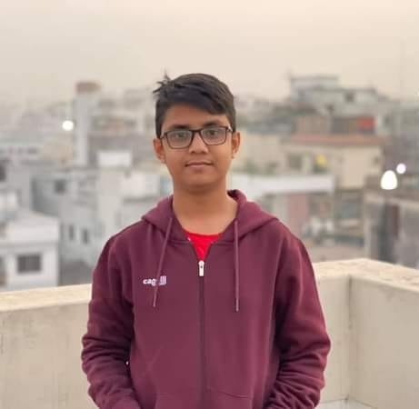

Anan Rahman
Address: Eastern Housing , Mirpur
Email address: franan975@gmail.com
Phone number:01976575114
Profile
As a web designer, my objective is to make a positive impact on clients, co-workers,and the Internet using my skills and experience to design compelling and attractive websites.
SUMMARY
- Solving code problems.
- Editing & Design with designing team in the company to build perfect web designs.
- Experienced web page designer with extensive programming
- Proficient in HTML, CSS, Bootstrap, Dreamweaver, Responsive Design and Media Query.
- Have excellent management and communication skills.
- Basic knowledge of WordPress, Adobe Photoshop, JavaScript•
- Knowledge of Git.
Work experience
03/2020 - Till now, Intern Web Designer, ABC Company.
Key Responsibilities:
- Convert PSD to HTML.
- Convert PSD to Bootstrap.
- Checking for errors and de-bugging websites.
- Client interaction about the project.
- Making the website responsive.
- Designing personalized websites for fresher, middle and senior level clients.
- Modifying and making changes according to client’s requirements.
- Checking for errors and de-bugging websites.
- Client interaction about the project.
- Maintaining Excel sheet and regularly updating data.
- Creation of a few demo pages (2-3) for client approval.
- After the client approved the design, then the next step was to create the live website.
- Making the website responsive.
- Checking for errors and de-bugging websites.
- Client interaction about the project.
- Making the website responsive.
- Making Incredible India Website for Ministry.
- Convert PSD to HTML.
- Convert PSD to Bootstrap.
Education
SSC, MUBC 1 BR , Dhaka Board
Skills
TECHNICAL SKILLS
HTML5
CSS3
Bootstrap
Media Query
JavaScript
Photoshop
AEM Front-End
GIT
Hobbies
Watching Movie
Listening Music
Parsonal Information
Father's Name : W Rahman
Mother's Name : F Rahman
Nationality : Bangladeshi
Sex : Male
Religion: Islam (Sunny)
Marital Status : Single
Permanent Address: Vill. & Post- Hizoldi , P.S. – Kalaroa, Dis : Satkhira .